VULFA · Propuesta comercial
VULFA ya tiene planta, marca registrada, etiquetas y producto. Lo que todavía no tiene es la evidencia de que puede generar demanda, vender y volver a vender. Ese es el trabajo de los próximos cinco meses, y es lo único que va a mirar el inversor en 2027.
Antes de proponer nada, ordenamos lo que ya existe. Es más de lo que suele haber cuando una marca nos llama, y cambia por completo dónde conviene poner la plata: no hay que construir identidad, hay que construir demanda y canal.
Planta propia habilitada con historia farmacéutica desde 2003 (Laboratorio Sudamericano SRL) y capacidad de 20.000 kg/mes de polvos, 10 M de comprimidos y 2 M de cápsulas.
Marca VULFA registrada, manual de marca, sistema de símbolos por producto y etiquetas diseñadas para los 6 SKU de lanzamiento.
Infraestructura de venta armada: sitio web en desarrollo, Tienda Nube, tiendas de Mercado Libre abiertas y dos vendedores B2B en la calle.
Presupuesto y objetivo definidos: USD 50.000 para cinco meses y una meta clara de 3.000 unidades mensuales.
Cero awareness. Nadie busca "VULFA" hoy. En una categoría donde la recomendación pesa más que el precio, arrancar sin marca conocida es la barrera real.
Cero prueba social. Ninguna reseña en Mercado Libre, ningún testimonio, ninguna foto de producto en manos de nadie. En suplementos, eso es lo primero que mira el comprador.
Cero activos de contenido. La web tiene los espacios de fotos de producto vacíos. Sin fotos no hay ficha de ML, no hay pauta y no hay catálogo comercial.
Cero presencia social. No hay Instagram, TikTok ni Facebook activos. El descubrimiento de la categoría pasa por ahí.
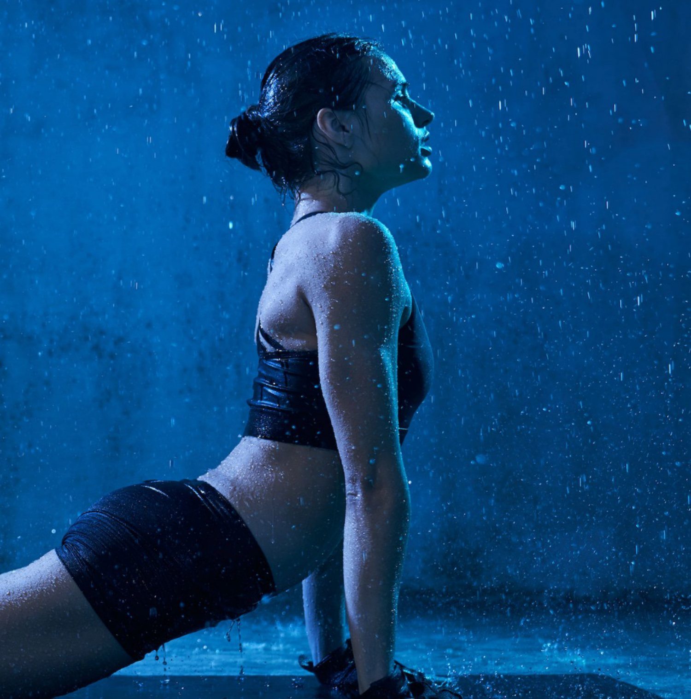
En cinco meses no se construye una marca. Se construye la prueba de que la marca puede funcionar. Es un objetivo distinto, más chico y mucho más alcanzable.
Juan nos pidió que le dijéramos la verdad, incluso si la verdad era "no". Acá está:
con USD 50.000 en cinco meses —fee de agencia, medios, canjes y acciones incluidos— no se instala
una marca de suplementos en Argentina. ENA vende más de un millón de unidades por año y tiene
más del 30% del mercado. Gentech es proveedor oficial de AFA y está en el 80% de los clubes de
primera. Ese lugar no se compra con este presupuesto, y quien les diga que sí les está vendiendo humo.
Lo que sí se puede hacer —y es exactamente lo que el inversor necesita ver— es demostrar demanda
real, con números, en tres meses de piloto. Toda esta propuesta está diseñada para producir esa
evidencia y no para gastar en alcance que no se puede sostener.
La categoría está partida en dos mundos que no se hablan, y VULFA nace justo en el medio con algo que ninguno de los dos tiene del todo.
ENA, Star Nutrition, Gentech, HTN, Ultratech, Xtrenght, Gold Nutrition, Body Advance, Pulver. Estética fitness, potes grandes, aval deportivo y batalla de precio en Mercado Libre. Muchísimo volumen, cero relato de laboratorio.
Suplementos y vitaminas de mostrador. Tienen respaldo y credibilidad, pero comunican como prospecto: funcional, frío, sin narrativa. Se venden por prescripción, no por elección.
Es la única frase que VULFA puede decir y sus competidores no: la misma planta que hacía medicamentos, haciendo su proteína. No es un claim de marketing, es un dato verificable —y en una categoría donde ANMAT publica prohibiciones de suplementos con rótulos irregulares, vale doble. Ese es el territorio, y es gratis: ya lo tienen.
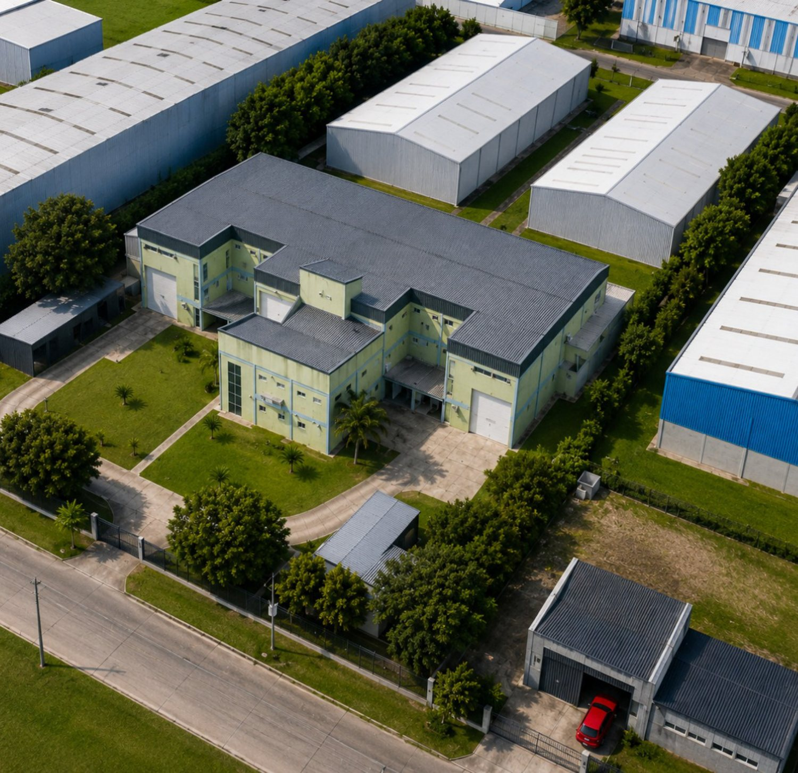
Fuentes: Forbes Argentina (share y volumen de ENA), Gentech (proveedor oficial AFA), Mordor Intelligence (CAGR de suplementos proteicos), Boletín Oficial 26/06/2025 (Resolución Conjunta 33/2025, sustitución del art. 235 del Código Alimentario Argentino). Consultadas el 8/9/2026.
Esta es la cuenta que hicimos antes de armar el plan, y es la que define todo lo que sigue. Si el objetivo de 3.000 unidades mensuales se persigue solo con publicidad digital, no se llega: la aritmética no da con ningún presupuesto razonable. Si se abre por canal, sí da.
| Canal | Unidades / mes | Peso | Cómo se consigue | Qué palanca lo mueve |
|---|---|---|---|---|
| Distribuidores B2B | 1.300 | 43% | 2 a 3 cuentas activas de 400–600 unidades | Kit comercial, prueba de rotación y una marca que se vea seria en góndola |
| Venta directa B2B | 900 | 30% | ~50 cuentas (gimnasios, boxes, tiendas) de ~18 unidades/mes | Prospección de los vendedores + prescriptor local + consumidor que pregunta la marca |
| Mercado Libre | 500 | 17% | ~360 órdenes/mes | Fichas optimizadas, Mercado Ads y reputación |
| Tienda propia (D2C) | 300 | 10% | ~215 órdenes/mes | Meta, Google, email y recompra |
| Objetivo | 3.000 | 100% | Digital = 800 un. (27%) · B2B = 2.200 un. (73%) |
Y lo que abre una cuenta B2B no es un CPM: es material comercial profesional, una muestra, una rotación demostrable y un consumidor que entra al gimnasio preguntando por VULFA. Por eso el plan invierte en habilitar la venta, no solo en publicar.
Comprar el tráfico necesario para vender 300 unidades mensuales en la tienda propia consumiría prácticamente todo el presupuesto de medios. La tienda propia es donde se cuida el margen y se construye la base de datos, no donde se hacen los 3.000.
Una unidad vendida en la tienda propia deja bastante más margen que una vendida a distribuidor. Optimizar por unidades sin mirar el margen por canal lleva a decisiones malas. Necesitamos la lista de precios y el margen de contribución por canal para optimizar por lo que importa.
Grupo Bulla tiene una droguería (Medinfar) y dos farmacias (Mata y Guiñazú). En la
presentación aparecen como ramas que "no tienen nada que ver" con VULFA. Comercialmente son otra
cosa: son el primer punto de venta propio donde medir rotación real sin costo de sell-in,
la vía más corta para generar las primeras reseñas y fotos de góndola, y una puerta ya construida
al canal farmacia a través de la cartera de la droguería.
Es una decisión societaria, no de marketing —pero si la respuesta es sí, es la palanca más
barata que tienen y la queremos sobre la mesa en la primera semana.
El sponsoreo institucional grande ya está tomado: ENA con la UAR y Los Pumas, Gentech con AFA.
Con este presupuesto no se compra ese lugar. Pero un box de crossfit que compra 20 unidades es
tres cosas a la vez: cliente B2B, punto de venta y medio de comunicación —su coach es un
prescriptor y su comunidad es una audiencia calificada.
Por eso la estrategia es capilaridad, no cobertura: densidad en los lugares donde el
deportista ya está, en vez de alcance masivo que no se puede sostener cinco meses.
No por el alcance, no por los seguidores, no por lo linda que quedó la placa. El programa de septiembre a enero tiene un solo público real: el inversor que decide la segunda inyección de capital. Y lo que ese inversor necesita ver son cuatro cosas.
Gente que no conocía VULFA la compra. Con costo de adquisición medido, no estimado.
Cuentas B2B abiertas que reponen. Un cliente que repite vale más que diez que probaron.
El negocio de suplementos vive de la recurrencia. La tasa de recompra a 60 días es el indicador de valor de marca.
Que alguien busque "vulfa" en Google. La primera prueba de que una marca existe es que la busquen por su nombre.
Estrategia, medición, fotos de producto, fichas de ML, redes y material comercial. Sin estos activos no se puede vender ni medir nada. La pauta arranca en modo reconocimiento.
Lanzamiento comercial. Pauta encendida, primeros prescriptores, sell-in B2B con material profesional. Se aprende cuánto cuesta vender una unidad.
Se corta lo que no rinde y se pone presupuesto donde el costo por unidad cierra. Cierre con el informe del piloto en formato para el inversor.
Nos pidieron un aliado estratégico y no una fábrica de contenido. La diferencia está en el primer frente: alguien que lidere la estrategia, decida dónde va la plata, reporte con datos y diga "por acá no va" cuando corresponda. Los otros cinco son la ejecución de esa decisión.
Una reunión semanal fija con Macarena más un comité mensual con la Dirección. Tablero de KPIs siempre online, reporte mensual, radar de competencia y decisión explícita de asignación de presupuesto mes a mes. Es el rol que pidieron: liderar, reportar y traer la agenda de oportunidades.
Instagram y TikTok como cuentas principales, Facebook como espejo para pauta. 12 piezas y 8 videos verticales por mes, stories tres veces por semana y reporte. Pilares: para qué sirve cada producto, dosis y evidencia, backstage de fabricación, y comunidad deportiva. Incluye moderación de las consultas públicas —comentarios y preguntas en las publicaciones— con derivación al asesor comercial. Los mensajes directos los responde VULFA.
Una jornada de captura por mes con equipo liviano: 40 a 50 fotos y 10 a 12 videos verticales en planta, en un gimnasio aliado o en estudio. Es lo que hace que el mes siguiente no se resuelva con banco de imágenes: contenido propio, con producto real y gente real.
Meta para descubrimiento, catálogo y retargeting; Google para capturar la intención que ya existe ("creatina", "whey protein", "colágeno hidrolizado"); Mercado Ads donde ya hay decisión de compra. Optimizaciones, reportes y creatividades: el relevo creativo es parte del servicio, no un extra, porque hoy la ventana de fatiga en Meta es de dos a tres semanas.
Tienda oficial diseñada y las 6 fichas optimizadas: título con SEO, atributos completos, fotos, descripción y contenido enriquecido. Después, gestión mensual de Mercado Ads: Product Ads sobre los 6 SKU con puja diferenciada por producto ancla y lectura de rotación por publicación. Es la tercera plataforma de pauta y la que trabaja donde ya hay intención de compra. La operación diaria de la ficha —preguntas, reclamos y reputación— queda del lado de VULFA.
Las horas de búsqueda de perfiles: scoring de deportistas, entrenadores, nutricionistas y boxes; negociación de canje o caché; brief creativo; seguimiento. Cada activación sale con su código de seguimiento, para saber cuál vendió y cuál no. Incluye también la negociación y el brief de los PNTs en streaming. Los cachés y el costo del PNT van aparte, dentro del bolsillo de inversión.
Hoy la web tiene los espacios de producto vacíos, las fichas de Mercado Libre no pueden publicarse bien y la pauta no tiene con qué armar un anuncio. La producción de fotos no es un lujo del plan: es el cuello de botella.
Jornada de producto (va en el arranque). Packshots de los 6 SKU sobre fondo, producto en contexto y 6 a 8 reels. Habilita web, fichas de ML, catálogo y pauta.
Jornada en planta (recomendada, adicional). Institucional de 60 a 90 segundos, versión de 30 para pauta, reels de calidad farmacéutica y backstage. Es el único contenido que ningún competidor del mundo gym puede producir.
Jornada ágil mensual (recurrente). Alimenta el mes con formato nativo, que es el que rinde en Instagram y TikTok. Deliberadamente más liviana y más barata que un rodaje: no todo el contenido tiene que ser una producción.
No tenemos ningún problema y no somos una agencia monopólica. Si la producción va con Pisco, nosotros escribimos los guiones, armamos el plan de rodaje y dirigimos el uso del material; ellos ejecutan. Lo mismo aplica al diseñador que hizo el manual de marca. Ustedes eligen a quién le dan cada pieza; nosotros nos ocupamos de que todo tire para el mismo lado.
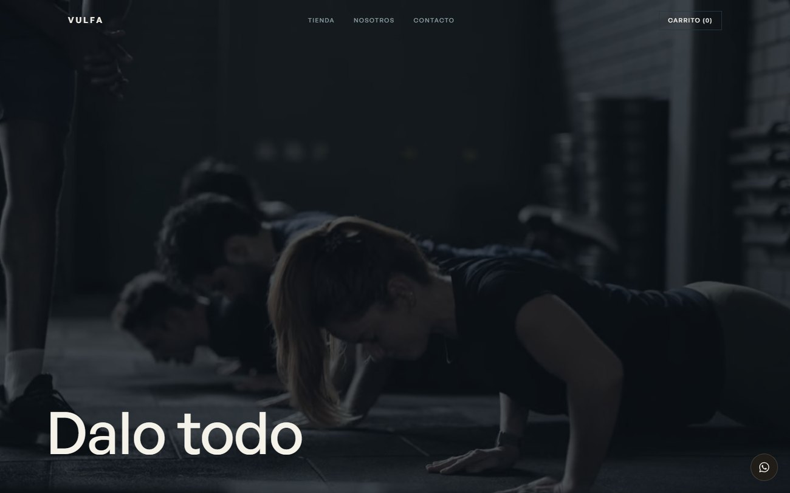
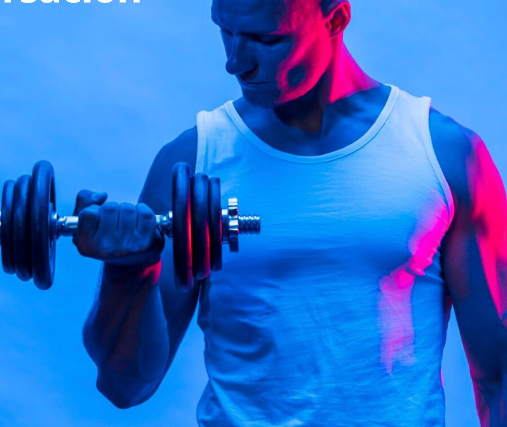
Con este presupuesto, repartir el esfuerzo en partes iguales entre los seis SKU es la forma más rápida de no mover ninguno. Nos dijeron que la proteína y la creatina son los de mejor margen: el plan concentra ahí, y usa el resto como puerta de entrada de ticket bajo y como argumento de recompra.
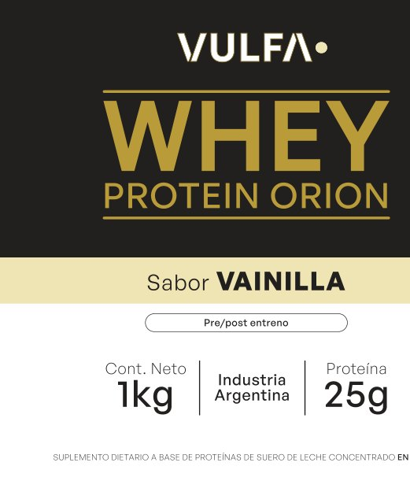
El más buscado de la categoría y el de mejor margen. Es el producto con el que se compite y por el que la gente descubre la marca. 60% del esfuerzo creativo y de pauta.
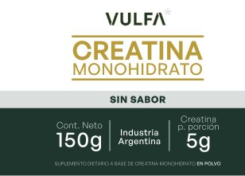
La categoría de crecimiento más explosivo: saltó del gimnasio al público general. Ticket accesible, demanda de búsqueda alta y conversación viva en redes. El mejor producto de primera compra.
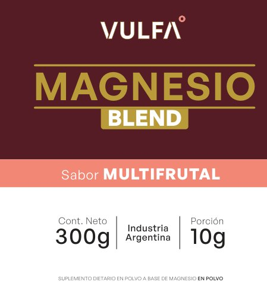
Cinco tipos de magnesio en polvo. El magnesio es el suplemento más consumido del país y el de barrera de entrada más baja. Sirve para captar gente que todavía no se define "deportista".
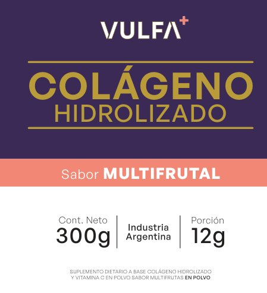
Habla a un público que no es el del gimnasio y que ya está en Instagram. Es el producto que abre la puerta a la línea de estética y adulto mayor que Macarena dejó explícitamente no descartada.
Comprimidos: el formato que entiende el canal farmacia y la droguería. Es el SKU que mejor viaja al canal propio del grupo y a prescripción profesional.
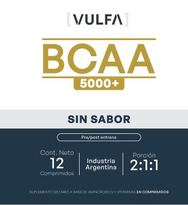
Producto de nicho, para el consumidor ya informado. No lidera campañas: trabaja como complemento en el catálogo, en el combo con proteína y en la venta B2B a tiendas especializadas.
Antes de los escenarios, esto: qué es honorario nuestro, qué es inversión de ustedes, qué se paga en producto y qué queda afuera del presupuesto. Todo lo que está en los bolsillos 1 y 2 sale de los USD 50.000. Nada más. Y una precisión que importa: el fee variable del 15% se calcula únicamente sobre lo invertido en plataformas —Meta, Google y Mercado Ads—, nunca sobre los PNTs de streaming, los cachés de prescriptores ni las activaciones.
| Bolsillo | Qué incluye | Quién lo cobra | ¿Sale de los USD 50.000? | ¿Paga el 15% variable? |
|---|---|---|---|---|
| 1 · Honorarios Popcorn | Arranque de pago único + fee fijo mensual + fee variable del 15% | Popcorn | Sí, los tres. El variable también. | — |
| 2a · Inversión en plataformas | Meta Ads · Google Ads · Mercado Ads | Las plataformas, directo. Popcorn no toca esa plata: la administra | Sí | Sí. Es la única base del fee variable |
| 2b · Acciones | Cachés de prescriptores · PNTs en streaming · activaciones y punto de venta | Los creadores, los canales y los proveedores de cada acción | Sí | No. El fee variable no se aplica sobre acciones: la coordinación ya está paga en el fee fijo |
| 3 · Aporte en producto | Canje con micro-creadores y siembra por reseña. Se mide en unidades, no en pesos | Nadie: es producto de VULFA | No. Se valúa a costo de fabricación y se registra como costo de producto | No. No hay flujo de caja que administrar |
| 4 · Impuestos de plataforma | IVA, percepciones de IVA e IIBB y retención de Ganancias sobre lo invertido en Meta, Google y ML: entre 40% y 52% | Las plataformas, directo | No. Para VULFA es crédito fiscal computable, no gasto | No |
Todo lo que sigue es bolsillo 2: inversión en efectivo, montos netos. Está partido en dos: lo que corre todos los meses —las plataformas, que es la única base del fee variable— y las bolsas para acciones, que son un monto total y se usan cuando aparece la oportunidad, no en cuotas.
Son cinco meses de trabajo y cinco meses de inversión. Si el arranque cae a mitad de mes, el primer mes se prorratea y el programa corre igual sus cinco meses completos. En septiembre la pauta trabaja en modo reconocimiento mientras se termina de habilitar el producto; desde octubre pasa a conversión.
| Partida | Por mes | Total 5 meses | Qué compra |
|---|---|---|---|
| Inversión mensual sostenida | |||
| Meta Ads | $2.250.000 | $11.250.000 | Descubrimiento + conversión + catálogo + retargeting, con presupuesto para testear creatividades |
| Google Ads | $1.500.000 | $7.500.000 | Búsqueda genérica y de marca + Shopping/Performance Max sobre el feed de la tienda |
| Mercado Ads | $950.000 | $4.750.000 | Product Ads sobre los 6 SKU, con puja diferenciada por producto ancla |
| Subtotal plataformas · base del 15% | $4.700.000 | $23.500.000 | Cinco meses, de septiembre a enero. Fee variable: $3.525.000 |
| Bolsas para acciones · monto total, no mensual | |||
| Prescriptores y creadores | bolsa | $2.000.000 | Cachés de perfiles pagos, para usar cuando aparece el perfil que vale la pena. El canje de producto va aparte y no consume esta bolsa |
| PNT en streaming | 1 acción | $3.000.000 | Campaña de menciones en un canal de streaming deportivo. Recomendamos ubicarla en noviembre, con el lanzamiento ya en la calle |
| Activaciones y punto de venta | bolsa | $3.000.000 | Activaciones en boxes, torneos y eventos del calendario deportivo, material POP y siembra por reseña |
| Subtotal acciones · sin fee variable | — | $8.000.000 | El reparto entre las tres se ajusta según lo que aparezca: es una bolsa, no tres compartimentos cerrados |
| Inversión en efectivo | $4.700.000/mes | $31.500.000 | Total del programa con honorarios y fee variable: USD 49.971 |
| Partida | Por mes | Total 5 meses | Qué compra |
|---|---|---|---|
| Inversión mensual sostenida | |||
| Meta Ads | $3.800.000 | $19.000.000 | Todo lo anterior + campañas de marca sostenidas y audiencias amplias |
| Google Ads | $2.600.000 | $13.000.000 | Búsqueda + Performance Max + YouTube para instalar el relato de laboratorio |
| Mercado Ads | $1.400.000 | $7.000.000 | Pelea por la posición de "más vendidos" en las categorías ancla |
| Subtotal plataformas · base del 15% | $7.800.000 | $39.000.000 | Cinco meses, de septiembre a enero. Fee variable: $5.850.000 |
| Bolsas para acciones · monto total, no mensual | |||
| Prescriptores y creadores | bolsa | $3.000.000 | Cachés de perfiles pagos, con margen para sostener a los que funcionan y no solo probar |
| PNTs en streaming | 2 acciones | $6.000.000 | Una en el lanzamiento de noviembre y otra en el pico de verano de enero |
| Embajador deportivo | semestral | $2.500.000 | Un atleta o equipo federado con derechos de imagen y contenido propio |
| Activaciones y punto de venta | bolsa | $1.500.000 | Presencia en eventos y torneos del calendario deportivo |
| Subtotal acciones · sin fee variable | — | $13.000.000 | El reparto interno se ajusta según lo que aparezca |
| Inversión en efectivo | $7.800.000/mes | $52.000.000 | Total del programa con honorarios y fee variable: USD 65.188 |
Un PNT en streaming cuesta del orden de $3.000.000 y puede ser más. Diluirlo en cinco cuotas de $600.000 no compra nada. Lo mismo con un caché que vale la pena: si el perfil correcto aparece en noviembre, hay que poder pagarlo en noviembre. La bolsa existe para poder decidir cuándo, no para repartir en partes iguales.
Popcorn propone, la Dirección Comercial aprueba y se ejecuta. Cada acción sale con su código de seguimiento propio, así que a fin de mes se sabe cuánto vendió cada una. Al cierre del piloto queda un registro de qué acción trajo unidades y a qué costo: eso es exactamente lo que el inversor va a querer ver.
Estas bolsas no pagan el fee variable del 15%: el variable se calcula solo sobre lo invertido en Meta, Google y Mercado Ads. Cada peso que va a una acción va completo a la acción. Y el canje de producto va aparte y no consume la bolsa: se paga en unidades.
La partida que no consume presupuesto y no paga fee variable, y donde VULFA tiene una ventaja que ninguna marca sin planta puede igualar: un competidor que compra producto terminado paga el canje a precio de reventa; ustedes lo pagan a costo de fabricación. Por eso el plan arranca por canje y guarda la bolsa de efectivo para los dos o tres perfiles que realmente muevan venta.
| Uso | B · Conservador | C · Ideal | Criterio |
|---|---|---|---|
| Canje con micro-creadores | ~24 un/mes | ~45 un/mes | 3 a 6 unidades por perfil, para que prueben y muestren el producto en uso durante varias semanas |
| Siembra por reseña en ML | ~16 un/mes | ~25 un/mes | Primeras unidades a cambio de reseña verificada. Es lo que rompe el cero de prueba social |
| Total en unidades · 5 meses | ~200 un | ~350 un | En el escenario B es menos del 7% de un mes de objetivo de venta |
Nunca por seguidores. Cada activación sale con código de descuento propio y UTM, así que a fin de mes sabemos exactamente cuántas unidades vendió cada perfil. Se renueva a quien vendió y se corta a quien no, sin discusión de afinidad. En el mes 3 la bolsa ya se concentra en los que funcionan.
Ir a buscar a la figura de moda. Como dijo Sol en la reunión: lo que le sirve a un laboratorio es prescripción, no fama. Un nutricionista con 8.000 seguidores que recomienda la creatina de VULFA vale más que un famoso con 500.000 que no la toma —y además es lo único defendible frente al marco regulatorio.
No vamos a poner un CPL o un CPC como si fuera un dato: no tenemos todavía la cuenta de VULFA, y en Argentina no existe un estudio público de costos por industria. Lo que sí podemos hacer es mostrar el modelo completo con cada supuesto declarado, para que se pueda discutir y para que en dos semanas lo reemplacemos por el dato real de la subasta.
| Supuesto | Valor de trabajo | De dónde sale | Cuándo se reemplaza |
|---|---|---|---|
| Precio promedio por unidad | $50.000 | Punto medio conservador del rango que declaró VULFA ($35.000 a $100.000) | Con la lista de precios final — es el dato que más nos falta |
| Unidades por orden | 1,4 | Criterio: la orden típica de la categoría combina proteína con creatina o magnesio | Primeras 100 órdenes reales |
| CPC promedio ponderado | $500 a $900 | Criterio del equipo de Paid Media. No es un dato de mercado publicado | Semana 1: Planificador de Palabras Clave de Google en pesos + estimación del administrador de Meta |
| Conversión en Mercado Libre | 3,5% | Criterio: ML resuelve pago, envío y confianza, así que convierte muy por encima de una tienda nueva | Semana 2: ML informa visitas por publicación |
| Conversión en tienda propia | 1,2% | Marca nueva sin reputación. La referencia local de alimentos y bebidas para grandes marcas es 2,07% (CACE) | Semana 2, con el pixel y GA4 midiendo |
| Ticket de referencia del e-commerce argentino | $107.597 | CACE, primer semestre 2026 (dato local publicado) | Sirve de control: nuestro supuesto de ticket queda por debajo |
| Escenario | Clics / mes | Órdenes / mes | Unidades / mes | Punto de trabajo | % del objetivo digital |
|---|---|---|---|---|---|
| B · Conservador | 4.350 – 7.800 | 80 – 250 | 135 – 490 | ~310 | 39% |
| C · Ideal | 7.200 – 12.900 | 130 – 410 | 230 – 805 | ~515 | 64% |
Las unidades incluyen el aporte del orgánico, los prescriptores y la recompra (entre un 25% y un 40% por encima de lo que compra el clic). El "% del objetivo digital" se calcula sobre las 800 unidades mensuales que el canal digital tiene que aportar dentro de las 3.000 totales.
| Escenario | Sep | Oct | Nov | Dic | Ene | Total 5 meses |
|---|---|---|---|---|---|---|
| B · Conservador | 78 | 171 | 248 | 310 | 341 | 1.148 |
| C · Ideal | 129 | 283 | 412 | 515 | 567 | 1.906 |
| Rampa aplicada | 25% | 55% | 80% | 100% | 110% | del régimen |
Con el escenario conservador, 3.000 unidades mensuales es un objetivo de marzo o abril, no de enero. Con el ideal, enero es alcanzable si el canal B2B acompaña.
Y eso no es un problema del plan: es la aritmética del presupuesto. Preferimos decirlo ahora, dejarlo escrito y trabajar contra un número real, antes que prometer enero y explicar en diciembre por qué no llegamos. Si mientras el inversor vea crecimiento sostenido mes a mes —que fue exactamente lo que Juan dijo que necesita— el piloto cumple su función.
Nos dijeron que no sabían si era mucho o poco. Esta es nuestra respuesta: es un presupuesto acotado pero suficiente para un piloto bien hecho, siempre que el primer mes se use para construir los activos y no para comprar alcance. Acá está todo adentro —honorarios fijos, fee variable e inversión— en el escenario recomendado.
| Destino | Por mes | Total del programa | USD | Peso | Cuándo se paga |
|---|---|---|---|---|---|
| 1a · Arranque | pago único | $11.374.008 | 7.583 | 15% | Una sola vez, al confirmar. Cubre el trabajo de septiembre: estrategia, medición, fotos, tienda y fichas de ML, redes y kit comercial |
| 1b · Fee fijo de Popcorn | $5.711.500 | $28.557.502 | 19.038 | 38% | Cinco cuotas iguales de $5.711.500, de septiembre a enero, 100% adelantadas |
| 1c · Fee variable de Popcorn · 15% | ≈ $705.000 | $3.525.000 | 2.350 | 5% | Cinco meses, de septiembre a enero. 15% de lo invertido en Meta, Google y Mercado Ads, a mes cerrado: si un mes se invierte menos, se paga menos. No se aplica a PNTs, cachés ni activaciones |
| 2a · Inversión en plataformas | $4.700.000 | $23.500.000 | 15.667 | 31% | Cinco meses, de septiembre a enero. Lo paga VULFA directo a cada plataforma |
| 2b · Bolsas de acción | bolsa | $8.000.000 | 5.333 | 11% | Sin cuota mensual: se usan cuando conviene. Prescriptores $2.000.000 + punto de venta $3.000.000 + PNT en streaming $3.000.000 |
| Total del programa | — | $74.956.510 | 49.971 | 100% | Dentro del presupuesto habilitado de USD 50.000 |
Cómo leer la tabla: la columna "por mes" es lo que
se factura o se invierte cada mes; la columna "total del programa" es la suma de todo el período, no un pago
único. Solo la primera fila se paga de una vez.
Los bolsillos 3 (canje en producto, ~200 unidades) y 4 (impuestos de plataforma, crédito fiscal) no consumen
este presupuesto: están explicados en la sección "cómo se reparte cada peso".
El 15% inicial construye lo que hoy bloquea todo lo demás: sin fotos de producto no hay fichas, sin fichas no hay Mercado Ads, sin material comercial los vendedores salen a la calle con las manos vacías. Es la inversión que desbloquea las otras dos.
Es una proporción alta, y es la del arranque de una marca que hay que construir entera: producción, fichas, redes, material comercial y medición se hacen una sola vez y se pagan en estos cinco meses. A partir de febrero el mix se invierte solo, porque el fee fijo no se mueve y la inversión crece. Y de los $31.500.000, $8.000.000 quedan como bolsa de acciones sin comprometer mes a mes: es el margen de maniobra para decidir sobre la marcha.
Desarrollo de la web (la hace Fernando), etiquetas y packaging (ya están), impresión del POP, logística de muestras, y los impuestos de plataforma del bolsillo 4. Todo detallado en el alcance.
Tildá los servicios con los que quieren avanzar y elegí un escenario de medios más arriba: el botón del final arma el correo con la selección exacta. Todos los valores son + IVA y están expresados en pesos a septiembre de 2026.
Para los servicios de pago único hay dos opciones. El bloque mensual se factura siempre 100% adelantado y no tiene descuento por anticipado: lo aclaramos para que no haya confusión.
Honorarios fijos, 5 meses: $39.931.510 + IVA con el bloque A anticipado, o $40.283.283 + IVA con el bloque A en dos pagos. Equivale a USD 26.621 o USD 26.856 de referencia.
Fee variable (escenario B): 15% sobre los $23.500.000 invertidos en plataformas = $3.525.000 + IVA en cinco meses ≈ USD 2.350. Se factura a mes cerrado, sobre lo efectivamente ejecutado: si un mes se invierte menos, se paga menos.
Inversión en efectivo (escenario B): $31.500.000 en cinco meses, ≈ USD 21.000. Son $23.500.000 de plataformas más $8.000.000 de bolsas de acción —prescriptores, PNT en streaming y punto de venta—, que no pagan fee variable. Lo paga VULFA directo, más los impuestos y percepciones que factura cada plataforma.
Total del programa: ≈ USD 49.971 del presupuesto de USD 50.000 habilitado. El fee variable está adentro de esa cifra, no por encima.
Los honorarios mensuales quedan fijos de septiembre a noviembre. Para diciembre y enero se aplica una única actualización por IPC (INDEC) acumulado del trimestre. Como el presupuesto de VULFA está definido en dólares, también podemos fijar el contrato en USD y facturar al tipo de cambio MEP del día: si prefieren esa modalidad, la dejamos escrita y evitamos el ajuste por inflación.
Unidades vendidas por mes y por canal. El número madre. Los 3.000 desagregados en distribuidores, venta directa, ML y tienda propia.
Cuentas B2B activas y tasa de reposición. Un cliente que repite vale diez que probaron. Es el indicador de que el producto rota, no solo que se vendió.
Costo de marketing por unidad vendida. Inversión total del mes dividido unidades. Es la métrica que va a mirar el inversor, y la que gobierna la regla de decisión.
Tasa de recompra a 60 días en D2C. El corazón del negocio de suplementos: sin recompra no hay negocio, hay una venta.
Rotación por punto de venta. Unidades por mes por cuenta. Distingue las cuentas que hay que atender de las que hay que dejar ir.
Reputación y posición en Mercado Libre. Color de reputación, cantidad de reseñas y posición en las búsquedas de categoría de los SKU ancla.
Búsquedas de marca. Cuánta gente busca "vulfa" en Google. Es la prueba más limpia de que la marca empezó a existir.
Facturación atribuida por canal. No solo unidades: pesos, para poder optimizar por margen y no por volumen.
Tablero online, siempre disponible para la Dirección. Sin números precargados: se llena con los datos reales desde la primera semana.
Si el costo de marketing por unidad es menor al 35% del margen de contribución: escalamos del escenario B al C con la reserva.
Entre 35% y 70%: se mantiene la inversión y se trabaja sobre creatividad, oferta y ficha.
Por encima del 70%: se corta el gasto de tráfico y se reasigna al canal B2B —muestras, POP, viáticos de vendedores, activaciones en gimnasios.
Para que esta regla funcione necesitamos el margen de contribución por SKU y por canal. Es el dato que más nos falta hoy, y el que convierte el reporte en una decisión.
Alineado a su propio calendario: inspección de planta, RNPA, producto en la calle a fines de septiembre o principios de octubre, y piloto de ventas hasta el cierre de enero. El programa arranca en septiembre y termina en enero.
Inmersión y workshop con Macarena. Mapa competitivo por SKU. Plan de medios. Setup completo de medición. Jornada de producción de producto. Alta de redes y sistema de plantillas. Tienda oficial y seis fichas de Mercado Libre listas para publicar. Kit comercial en manos de los vendedores. La pauta arranca en modo reconocimiento, mientras se termina de habilitar el producto. Cierra con el plan de lanzamiento aprobado.
Producto en la calle y la pauta pasa a conversión. Meta y Google con foco en descubrimiento y captura de intención. Fichas de ML activas y siembra de las primeras reseñas. Primeros prescriptores. Sell-in B2B con material profesional. Al cierre del mes, el primer costo real por unidad vendida.
Se reemplazan todos los supuestos por datos de la cuenta. Se enciende Mercado Ads. Jornada de rodaje en planta y video institucional, y la acción de PNT en streaming. Se duplica lo que rinde y se apaga lo que no. Ampliación del programa de prescriptores con los perfiles que efectivamente vendieron.
Campaña de verano y fiestas: es el pico de la categoría. Revisión del 15 de diciembre con la regla de decisión sobre la mesa: se escala, se sostiene o se reasigna al canal B2B. Cierre del trimestre con el primer informe consolidado.
Enero es el mes de mayor inscripción en gimnasios del año: foco en conversión, retargeting y primera campaña de recompra sobre la base construida. Y cierra el programa con un informe del piloto redactado en formato para el inversor: qué se probó, qué costó, qué rotó, qué se aprendió y qué haría falta para escalar en 2027. Ese documento es el entregable más importante de todo el programa.
No se enciende pauta de conversión sin stock: el mes se reorienta a contenido de marca y sell-in B2B, que no necesitan producto en góndola. Cero presupuesto quemado en tráfico sin producto.
Antes de publicar mapeamos precio por SKU de las diez marcas top. Si VULFA no puede competir en precio, no vamos a la góndola de precio: vamos con el relato de laboratorio, ficha superior y contenido.
Programa de siembra desde el día 1: primeras unidades a cambio de reseña verificada, y las farmacias del grupo como primer punto de rotación medible si la Dirección lo habilita.
Concentramos el 60% del esfuerzo en proteína y creatina, que son los de mejor margen según nos dijeron. El resto trabaja como puerta de entrada y como argumento de recompra.
Ya les pasó. La respuesta es cadencia escrita: reunión semanal fija con Macarena, tablero siempre online y responsables con nombre. Si algo se atrasa, se ve antes de que sea un problema.
Ya lo dijimos con números: con el escenario conservador, los 3.000 llegan en marzo o abril, no en enero. Lo dejamos escrito para poder negociar el plazo con el inversor sobre datos y no sobre expectativas.
Lista de precios por canal (retail, mayorista, distribuidor) y margen de contribución por SKU. Es el dato más importante de todos.
Stock disponible y lead time de producción por SKU, para no pautar sin producto.
Fecha real de RNPA por producto y estado de la habilitación de planta.
Accesos: Meta Business, Google Ads y Analytics, Tienda Nube, Mercado Libre y dominio.
Manual de marca en editable, etiquetas finales y logo vectorial.
Cartera actual de contactos B2B de Gerardo y Miguel, para no prospectar lo ya trabajado.
Los 3.000 desagregados por canal, tal como los mira la Dirección Comercial.
La decisión sobre el canal propio: ¿entran Medinfar, Mata y Guiñazú como canal de prueba?
VULFA es las dos cosas a la vez: un laboratorio farmacéutico que tiene que vender un producto de consumo. Es exactamente la intersección donde trabajamos.
Ocho de cada diez de nuestros clientes son de salud. Trabajamos con hospitales, laboratorios de análisis clínicos, prepagas y centros médicos. Comunicación regulada, evidencia y públicos profesionales son nuestro terreno habitual, no una curva de aprendizaje.
Y también vendemos producto. Tenemos clientes de consumo, e-commerce y B2B industrial: marcas que se miden en unidades vendidas y en cuentas abiertas, no en impresiones.
Todo bajo un mismo techo. Estrategia, paid media, contenido, producción audiovisual, diseño y web con una sola dirección estratégica. No coordinamos proveedores: los tenemos adentro.
No somos monopólicos. Trabajamos con los equipos externos que ustedes elijan —Pisco, su diseñador, quien sea. Nos ocupamos de que todo apunte al mismo objetivo comercial.
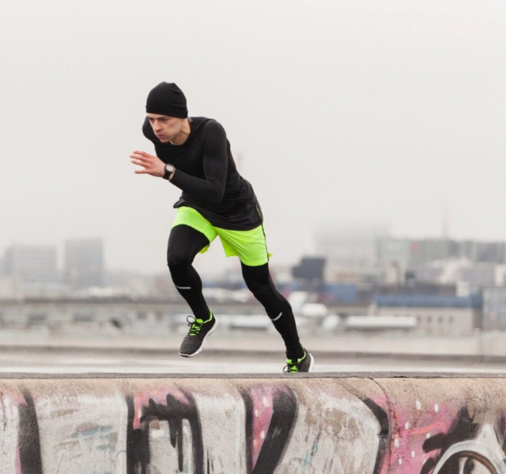
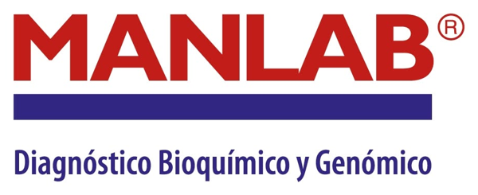
ManLab Swiss Medical
Swiss Medical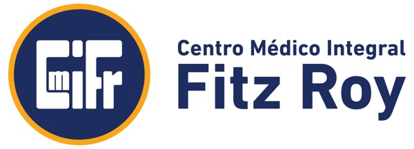
CMI Fitz Roy Mercado Cheque
Mercado Cheque Transpack
Transpack Evel
Evel Mitmaq
MitmaqOperations Manager. Es el contacto directo de Macarena: lleva la estrategia, la cadencia semanal y el reporte a la Dirección Comercial. florencia@somospopcorn.com
General Manager y responsable de Paid Media. Define el mix de inversión, la estructura de campañas y la estrategia de prescriptores. sol@somospopcorn.com
Executive Director. Dirige las jornadas de producción y el institucional de planta, y coordina con equipos externos si la producción va con terceros. demianlinet@somospopcorn.com
Detrás de ellos: un analista de marketing, un coordinador y un analista de paid media, diseño, content creator, community manager y edición. El equipo completo está dimensionado en las horas de cada servicio.
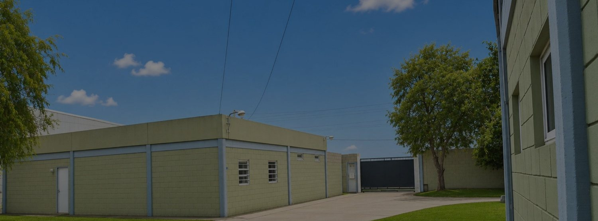
Seleccionan servicios y escenario de medios acá abajo y nos mandan el correo. Sin ida y vuelta de PDFs.
Facturamos el bloque A y nos pasan los ocho datos y los accesos de la primera semana.
Dos horas para cerrar objetivos por canal, prioridad de SKU y calendario de lanzamiento.
Plan de lanzamiento, plan de medios y jornada de producción agendada. Octubre sale.